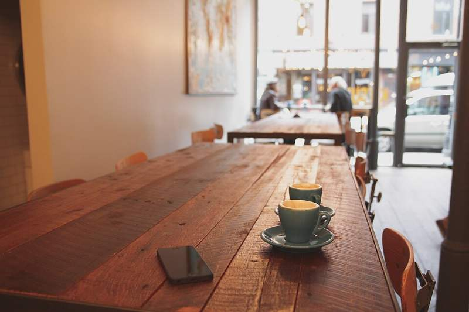

Our blogs
Recent Updates
Designing a homepage that converts
Read more
: Designing a homepage that converts
Nov 20, 2026
Ten small changes for a faster website
Read more
: Ten small changes for a faster website
Nov 16, 2026

How we plan a project from brief to launch
Read more
: How we plan a project from brief to launch
Nov 12, 2026